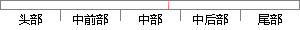
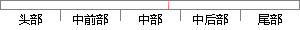

var pwd = md5(`${code}${this.
片段位置图

相似结果|
相似片段 1：（"pass_word"））） '获取密码并进行 MD5的加密var = Trim（request.Form（" var "））If （var <> session（"Code"）） Thenresponse.Write" |

相似结果|
相似片段 1：（"pass_word"））） '获取密码并进行 MD5的加密var = Trim（request.Form（" var "））If （var <> session（"Code"）） Thenresponse.Write" |